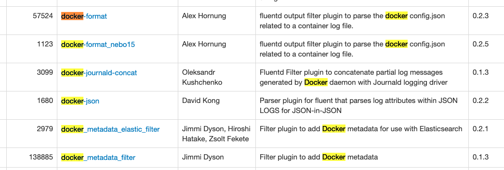

docker logs， kubectl logs能看到Docker容器的标准输出、标准错误，方便定位问题。而 xxx logs之所以能看到，是因为标准输出、标准错误存储在每个容器独有的日志文件中。
另外日志量大了，用docker logs看历史数据不大合适。我们就需要考虑将日志存储到日志中心去。
Docker默认支持如下日志驱动。有直接写文件的，有使用云服务的。下面简单介绍下。

credit: https://jaxenter.com/docker-logging-gotchas-137049.html
官方文档 https://docs.docker.com/config/containers/logging/configure/
默认驱动：json-file
默认的Logging Driver是json-file。docker info可以查看。全局的日志驱动设置，可以修改daemon配置文件 /etc/docker/daemon.json。
写入文件的日志格式长这样：{"log":"Log line is here\n","stream":"stdout","time":"2019-01-01T11:11:11.111111111Z"}，每一行是一个json文件，log字段为容器原来输出的每行内容。
默认配置，创建的容器的信息在这个目录下： /var/lib/docker/containers。
实验
root@ubuntu-parallel:~# docker run --name default_logging_driver hello-world
root@ubuntu-parallel:~# cd /var/lib/docker/containers/$(docker ps --no-trunc -aqf "name=default_logging_driver")
root@ubuntu-parallel:~# cat $(docker ps --no-trunc -aqf "name=default_logging_driver")-json.log
{"log":"\n","stream":"stdout","time":"2020-04-02T01:46:54.096347888Z"}
{"log":"Hello from Docker!\n","stream":"stdout","time":"2020-04-02T01:46:54.096377382Z"}
{"log":"This message shows that your installation appears to be working correctly.\n","stream":"stdout","time":"2020-04-02T01:46:54.096381118Z"}
{"log":"\n","stream":"stdout","time":"2020-04-02T01:46:54.096383725Z"}
https://docs.docker.com/config/containers/logging/json-file/
怎么记录更多上下文信息
json-file本身是没有记录上下文信息的。集中存储到日志中心服务器，就无法区分具体是哪个应用产生的日志了。
k8s的容器日志收集，上下文信息是由日志收集工具 fluentd 通过请求api server采集并缓存起来的。参考 https://xujiahua.github.io/posts/20200414-k8s-logging/
同样的思路，fluentd也有不少通过docker daemon查询或是解析容器目录下config.v2.json获取metadata的 filter 插件。

参考 https://www.fluentd.org/plugins
local
--log-driver指定日志驱动。
cat输出local文件，部分结果乱码。挺不方便日志解析的。
实验
root@ubuntu-parallel:~# docker run --name local_logging_driver --log-driver local hello-world
root@ubuntu-parallel:~# cd /var/lib/docker/containers/$(docker ps --no-trunc -aqf "name=local_logging_driver")
root@ubuntu-parallel:~# cat local-logs/container.log
stdout�������&
stdout�������Hello from Docker!&^
stdout˧�����JThis message shows that your installation appears to be working correctly.^
https://docs.docker.com/config/containers/logging/local/
none
不生成日志文件，docker logs也拿不到日志。实际使用不会考虑。
实验
root@ubuntu-parallel:~# docker run --name none_logging_driver --log-driver none hello-world
root@ubuntu-parallel:~# cd /var/lib/docker/containers/$(docker ps --no-trunc -aqf "name=none_logging_driver")
root@ubuntu-parallel:~# docker logs none_logging_driver
Error response from daemon: configured logging driver does not support reading
syslog
因为日志被写入了syslog，并混在其他应用的日志中，docker logs没办法工作了。
实验
# 观察syslog
root@ubuntu-parallel:~# tail -f /var/log/syslog
root@ubuntu-parallel:~# docker run --name syslog_logging_driver --log-driver syslog hello-world
# 日志不会写本地
root@ubuntu-parallel:~# cd /var/lib/docker/containers/$(docker ps --no-trunc -aqf "name=syslog_logging_driver")
root@ubuntu-parallel:~# docker logs syslog_logging_driver
Error response from daemon: configured logging driver does not support reading
https://docs.docker.com/config/containers/logging/syslog/
journald
写入syslog和journald，应用日志与系统日志混在一起，难以辨认了。
倒是journald驱动下，可以使用docker logs。
参考：https://wiki.archlinux.org/index.php/Systemd/Journal
实验
root@ubuntu-parallel:~# docker run --name journald_logging_driver --log-driver journald hello-world
root@ubuntu-parallel:~# journalctl
Apr 02 10:30:36 ubuntu-parallel 4b948bf091a8[999]: To try something more ambitious, you can run an Ubuntu container with:
Apr 02 10:30:36 ubuntu-parallel 4b948bf091a8[999]: $ docker run -it ubuntu bash
Apr 02 10:30:36 ubuntu-parallel 4b948bf091a8[999]:
Apr 02 10:30:36 ubuntu-parallel 4b948bf091a8[999]: Share images, automate workflows, and more with a free Docker ID:
Apr 02 10:30:36 ubuntu-parallel 4b948bf091a8[999]: https://hub.docker.com/
root@ubuntu-parallel:~# cd /var/lib/docker/containers/$(docker ps --no-trunc -aqf "name=journald_logging_driver")
# docker logs管用
root@ubuntu-parallel:~# docker logs journald_logging_driver
https://docs.docker.com/config/containers/logging/journald/
Fluentd
通过服务请求，让docker吐日志到fluentd进程。https://docs.docker.com/config/containers/logging/fluentd/
使用包括fluentd在很多日志驱动，因为日志写入到远程服务器，会导致docker logs， kubectl logs不可用。
Fluentd是一个挺灵活的工具，可以让fluentd主动监听容器目录下的日志文件。参考另一篇文章 https://xujiahua.github.io/posts/use-fluentd/
总结
为了兼容可使用docker logs ，kubectl logs，必须使用写本地文件的日志驱动。而json格式更方便工具（比如fluentd，logstash）解析，所以json-file是首选。
然后使用日志收集工具集中采集docker容器日志。k8s中日志收集策略，一般是在每台服务器上以DaemonSet的形式安装logging agent，监听本地文件、文件夹，将日志转发到日志中心。
当然这个前提条件是，应用日志是输出到标准输出和标准错误的。这对应用日志的规范有一定要求：
- 不输出多行日志。比如panic、exception。
- 应用日志使用JSON格式输出，方便后续的日志分析。
- 应用日志中加入更多的上下文信息。用于问题定位，维度分析。
- Go应用开发，使用logrus日志库，加字段，以JSON格式输出都很方便。
- 应用不关注日志该如何收集这个问题。不在应用层写日志到kafka、redis等中间件，让基础设施层处理。
- 应用要么写入文件、要么写入标准输出，这个应该很方便做成可配置的。对程序来说，都有共同的抽象，io.Writer。
应用日志如果是写到文件的，需要考虑通过数据卷，挂载等将日志与容器分离。采集挂载目录上的日志文件，以前怎么收集，现在还是怎么收集。还是建议写标准输出，这是目前的最佳实践。
Last modified on 2020-04-03